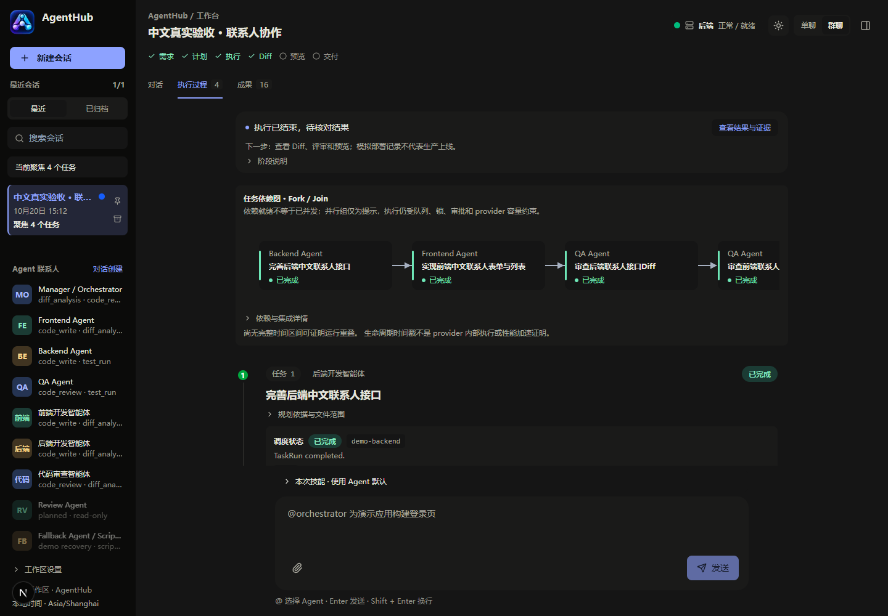
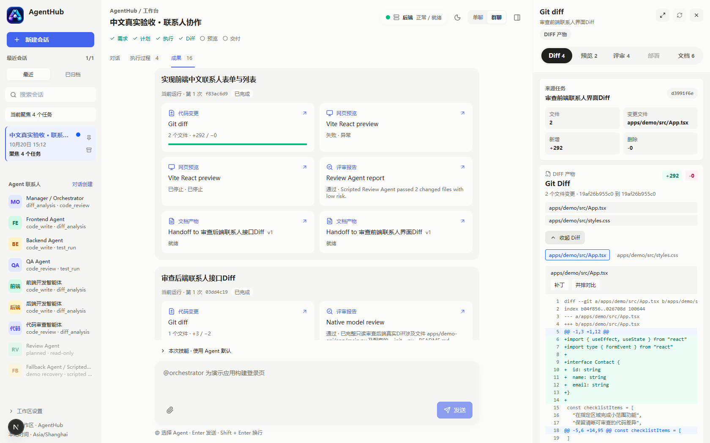
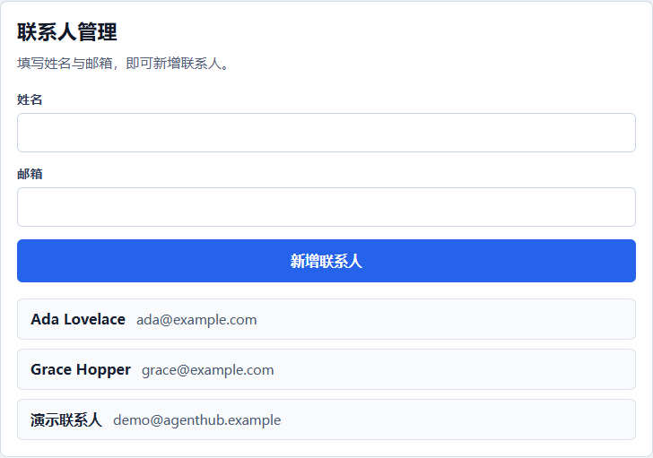

任务拆解
用中文描述需求或 @ 指定角色。明确支持的需求按规则识别；可选原生 Planner 输出结构化计划，校验目标、路径和依赖后再派发。
planning.py · planning_intents.py
一个面向本机开发的 IM 式多 Agent 编程工作台。 从中文需求拆解任务，让前端、后端和评审 Agent 按依赖协作。 在同一界面跟踪执行过程，查看真实 Diff、审查结果与应用预览。

围绕真实代码任务组织协作：先明确目标与依赖，再受控执行，最后核对 Diff、检查和预览。当前是本地单用户工作台，保留真实模型与脚本兜底的来源区别。
用中文描述需求或 @ 指定角色。明确支持的需求按规则识别；可选原生 Planner 输出结构化计划，校验目标、路径和依赖后再派发。
前端、后端和评审角色按依赖协作。任务图、运行记录与流式事件展示谁在执行、哪里阻塞；失败后可中断或显式重试。
直接查看文件增删与实际补丁，结合审查报告定位问题。模型评审和固定检查独立呈现，源码变化后需要重新核对验证依据。
在成果面板打开 Vite React 页面，检查交互后提出下一轮修改。预览健康与业务验收分别记录，页面打开不等于功能已经全部通过。
消息、引用与附件进入规划；任务按依赖和写锁执行。SQLite 保存运行及产物，SSE 将事件投影到工作台。规划、调度、代码执行和验收各自保留边界。
围绕四个问题设计：任务怎样拆解，角色怎样选择运行时，代码修改怎样隔离，以及结果怎样按当前版本核对。Skills、MCP、记忆和用量观测沿用这些边界。
planning.py · plan_validator.py · task_graph_builder.py
provider_gateway.py · codex_adapter.py · claude_code_adapter.py
session_queue.py · scheduler.py · target_locks.py
events.py · run_engine.py · run_diagnostics.py
拆解任务、跟踪各 Agent 的执行、检查真实 Diff，再结合审查结果与应用预览逐项核对。每个环节都保留可追踪的运行与成果。

历史同版评测：五类固定中文场景各 10 次，严格完整验收 40/50；另列受控恢复 10/10。198 条逻辑调用/尝试中 197 条有完整用量，1 条超时未知。展示案例不代替完整统计。
将中文需求拆成带角色、目标与依赖的任务，先核对范围，再进入执行。
任务图与运行记录展示各角色的状态、依赖和阻塞原因，流式事件持续更新执行进展。
按任务查看实际修改文件和增删补丁，把 Agent 的执行说明与具体代码变化对应起来。
查看问题、风险与修改建议，选中发现后准备修复。模型静态评审与源码版本绑定的固定检查分开核对。
打开生成页面，检查交互后继续提出修改。下面是示例应用“联系人管理”，用于演示前后端协作，不是平台的通讯录功能。

前端采用 Next.js / React，后端采用 FastAPI / SQLModel，SQLite 由 Alembic 管理版本。SSE 推送运行事件；Docker 是可选固定验证后端，不依赖 PostgreSQL、Redis 或 WebSocket。
planning.py / planning_intents.py角色提及、规则边界、原生规划和任务图校验。
run_engine.pyTaskRun 主执行链路、生命周期与执行收尾。
provider_gateway.py角色与运行时映射，保留 Codex、Claude Code 和脚本兜底的来源。
scheduler.py / session_queue.py依赖、访问模式、写队列和可运行状态判断。
skills.py / mcp_gateway.py版本冻结的技能说明，以及兼容 Codex 的受控只读项目文档连接。
target_locks.pyTarget 写锁获取、持有与终态释放。
memory_snapshots.py会话记忆与冻结上下文，保留来源和显式刷新边界。
db_migrations.pySQLite 版本检查、已有库一致备份与 Alembic 离线迁移。
diffs.py / reviews.py / previews.py真实变更、独立评审、预览生命周期与成果来源。